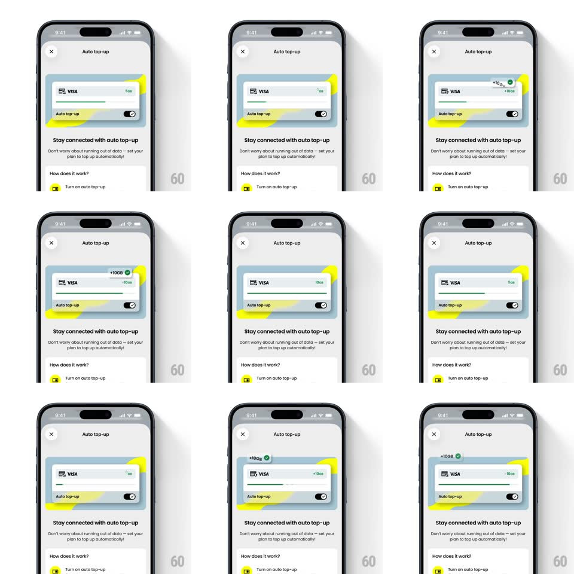

Media
Frame-by-frame

Rebuild this animation 1:1: Saily's auto top-up demo - a looping card animation where the data bar drains from 10GB to 0GB, a "+10GB" badge floats in, and the bar refills, selling the automatic top-up toggle below.

Rebuild this animation 1:1: Saily's auto top-up demo - a looping card animation where the data bar drains from 10GB to 0GB, a "+10GB" badge floats in, and the bar refills, selling the automatic top-up toggle below. ## Integration Integration: stack-agnostic spec - springs given as stiffness/damping, timed motions as duration + curve; map every value to your framework and animation library of choice. ## Scene Light sheet: close X top-left, "Auto top-up" title, a credit-card graphic (VISA) with yellow-green splash shapes behind it and a data progress bar across it, an "Auto top-up" toggle row on the card, then copy: "Stay connected with auto top-up", "Don't worry about running out of data - set your plan to top up automatically!", and a "How does it work?" FAQ row. ## Motion spec Pattern: looping product demo, ~4s cycle. - Drain: the bar depletes from full to empty (1.6s, ease-in-out), its GB label counting down (10GB -> 0GB). - Badge: at empty, a green "+10GB" badge pops in above the card (spring ~380/18, scale 0 -> 1), drifts up 10px, and fades (600ms total). - Refill: the bar refills to full (1s, ease-out) with the label counting back up; yellow splash shapes wiggle (+-3deg, 400ms) on refill. - Pause: 600ms hold at full before the loop restarts. ## Calibration - The toggle on the card stays on the whole loop - the animation sells the result, not the toggle. - Splash shapes are decorative: they only wiggle, never translate off the card. ## Reduced motion Static full bar with a single "+10GB" badge, no loop. ## Don't miss - The count-down and count-up are numeric, matching the bar fill exactly. - The badge reads "+10GB" with a checkmark, not a generic refill icon.